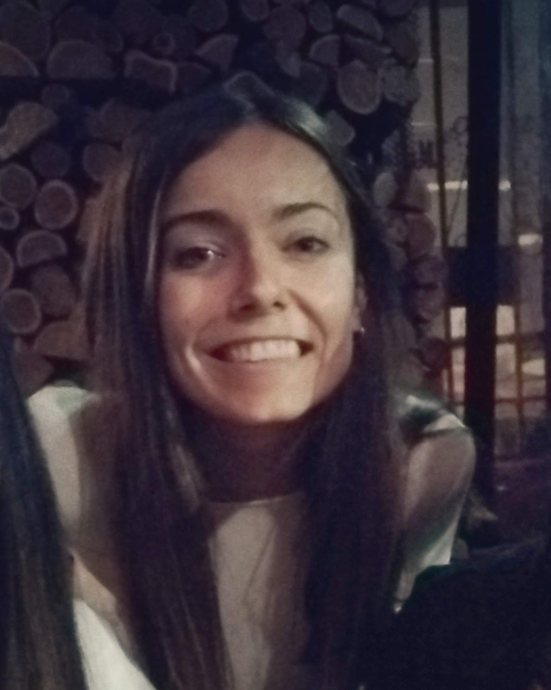

Vettorelo Sabrina Noel
Biomed. Eng.
About me
- I have experience working in a research group, operating laboratory material and equipment, performing electrochemical experiments. My research also involved the mathematical modeling of processes for the estimation of reaction parameters. My work is part of a project oriented to the development of electrochemical sensors.
- I like working with goals, in both short and long terms. I work well in a team but also on my own. I consider myself an orderly person and I seek perfection in what I do. I am also very eager to learn new skills and take new challenges.
- I am a very flexible person regarding working positions and areas.
Education
- Biomedical Engineering (2009-2015) Universidad Nacional de Cordoba.
- PhD. in Chemistry (2015-2020) Universidad Nacional de Cordoba.
Work Experience
- Assistant Professor (2017-today) Universidad Nacional de Cordoba.
Skills
- Modelling and Simulation.
- Matlab, Fortran, JavaScript.
- Origin (Software).
- Electrochemistry.
- Languages: English (upper-intermediate), Italian (basic).
Hobbies
- Learning new languages.
- Swimming and trekking.
- Sewing and knitting.
- Piano and guitar.
- Travel to new places.
Why am I studying in Henry?
I was feeling stucked in my postdoctoral research and with lack of
motivation, in part due to the pandemic situation. I felt like I
needed to make a change, but I wasn't sure what direction to take.
I always liked programming, I learnt a little bit during my grade career
and also during my PhD. One day, out of nowhere, my dad sent me a web
article about Henry. After making some research I found out that a friend
of mine was already taking classes in Henry. He helped me to clear all
my doubts and take this decision.
One of the things that I liked the most about taking this road was the
possibility to use my skills to solve particular problems, to help people.
The fact of working with specific goals and in a group is one of the things
that I like the most. Oh, and I also liked the short duration of the course
and the possibility of paying for it once you have a job, I'm very thankful
for that.
I want to give my best and learn as much as I can in Henry. I'm very excited
about moving out of my comfort zone and taking this challenge.